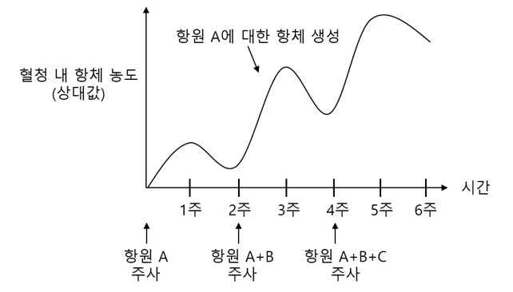

문제 2
(1) DNA가 복제될 때 (1) 선도가닥과 지연가닥이 생기는 이유와 (2)선도가닥과 지연가닥이 복제되는 과정을 설명하라.
(2) 해당과정과 발효의 연관성에 대해 설명하라.
(3) HIV의 핵심 구성 성분인 A, B, C 단백질을 항원으로 사용하여 쥐에 주사한 후 6주 동안 혈청 내 항체 농도 변화를 측정하는 실험을 진행하였다. 이 실험에서 최초에는 항원 A를 단독으로 주사하고, 2주 후에는 항원 A와 B를 동시에 주사하였다. 4주차에는 항원 A, B, C를 모두 주사하였다. 아래 전제 조건과 항체 A의 생성 변화 그래프를 참고하여 B, C 항원에 대한 항체 생성 변화를 그래프로 나타내고, 그 이유를 말하시오.
- 항원 주입에 따른 항체 생성은 독립적으로 일어난다.
- 각각의 항원은 동일한 양의 항체를 생성한다.
- 쥐는 2달 전 항원 C에 한 번 노출 된 적이 있다.
